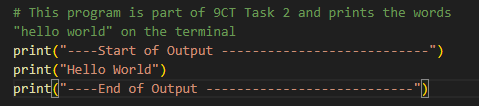
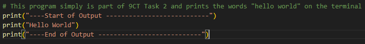
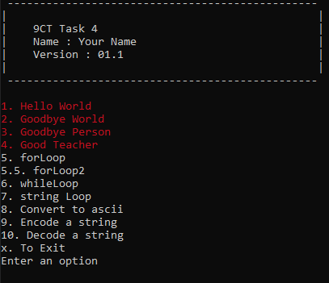

Assessment Task 4: The Python Challenge
Year 9 Computing Technology // Python Programming
DUE: Term 2 2026
Unveiling the Python Challenge 🐍
Welcome to the ultimate Python test. Your mission is to analyse, replicate, and decrypt. This task simulates real-world problem-solving where logic and precision are key.
THE CORE CHALLENGE
Reverse Engineering
80%
Analyse a compiled program without source code. Replicate its exact behaviour and output. This phase is peer assessed.
CYBER SECURITY BASICS
Encrypt / Decrypt
15%
Develop tools to manipulate text files using Caesar ciphers, including "Known Word" and "Brute Force" decryption tasks.
CREATIVE EXTENSION
Game Development
5%
If time allows, bring your coding skills to life by creating a simple game like Hangman or Word Guess.
Overview
This assessment task consists of three sequential phases. Each phase must be completed before moving on to the next. Phases 1 and 2 are peer marked and provide the foundation for later work.
- Algorithms
- Loops
- Conditionals
- User input
- Functions
- Commenting and code readability
Marks and Weighting
- Phase 1: 80%
- Phase 2: 15%
- Phase 3: 5%
Phase 1 carries the most weight and should be prioritised. Many students in previous years did not have time to complete Phase 3, so focus on finishing the early stages first.
Phase 1: Reverse Engineering & Menu System
Weighting: 80%
Core Objective
You must observe the behaviour of the original program and reproduce the output exactly under all conditions, including spacing, punctuation, and capitalisation.
Type of Program
The program you will receive is a menu program that runs in a terminal. You have already worked with terminal sessions where you use the keyboard rather than the mouse to interact with programs. The menu lists numbered options; users select one by typing the number and pressing Enter. For more about terminal-based menu programs, visit Terminal Menu Overview.
Implementation Steps
-
Menu Options 1 – 4:
For these four options on the menu, you do not need to create a menu program. Instead, create a separate Python file that produces the exact output required, including “Start of Output” and “End of Output” markers.
Example: Option 1 output:
Your Python script should look similar to this example:
 -
Menu Integration:
After all four standalone programs have been marked as complete, integrate them into a single comprehensive menu-based system. Each menu option must be contained in its own function.

Peer Marking (Quick Overview)
For each Phase 1 option, get a classmate to check your output against the model as soon as you finish; once you're marked competent, you can help mark others the same way.
Full details and rules are on the Peer Marking guide.
Phase 2 — Program Requirements
Weighting: 15%
You will develop four Python programs for Phase 2. Each program must use the specified filename format where [StudentNumber] is replaced with your student number.
Encrypt — [StudentNumber]-encrypt.py
- Prompt the user for an input file name, output filename and an integer offset (the key).
- read in the input file and apply the offset as the cypher key
- Write the encrypted content to the output file.
Decrypt — [StudentNumber]-decrypt.py
- Read an encrypted input file.
- Prompt the user for an output filename and the integer offset (the key).
- Decrypt the content and write the decrypted message to the output file.
Known-Word Attack — [StudentNumber]-knownValue.py
- Simulate an intercepted encrypted message where one plaintext word is known.
- Prompt the user for the encrypted filename and the desired decrypted output filename.
- Use the known word to deduce the key, decrypt the message, and write the result to the output file.
- Print a clear success message if decryption succeeds or an informative failure message if it does not.
Brute-Force (Dictionary) Attack — [StudentNumber]-dictionaryValue.py
- Simulate an intercepted encrypted message when no plaintext words are known.
- Prompt the user for: encrypted filename, decrypted output filename, and dictionary filename.
- Attempt all 25 possible offsets, testing each decryption against words from the supplied dictionary (use the Top 1000 Words page).
- To reduce false positives, ignore dictionary words shorter than 3 characters.
- If a correct key is found, write the decrypted message to the output file and print a success message; otherwise print a failure message.
General requirements (all programs)
- Use the exact filename formats supplied.
- Include input prompts as specified above.
- Provide clear user messages for both success and failure cases.
Phase 3: Game Development
Weighting: 5%
Objective: Write a Simple Game
If time allows, develop a simple, fully functional game in Python. Hangman or a word-guessing game are excellent options.
- Focus: Ensure the game is functional, structured, and commented clearly.
- You will be marked on complexity, completeness, and adherence to good coding techniques.
Hangman Tips
If you’re unsure which game to create, start with Hangman. It can be developed in stages so you can test as you go.
Stage 1 – Basic Text Version
Build a text-only version that shows messages like You have 3 / 6 guesses remaining.
A friend inputs the secret word. Focus on checking letters, tracking guesses, and determining win/lose conditions.
Stage 2 – Add ASCII Graphics
Add ASCII art to visualise the hangman figure. Each incorrect guess updates the display. You can make the art as simple or creative as you like.
Stage 3 – Automatic Word Selection
Replace manual word entry with a list of possible words. Have the program randomly select one each round so the game is self-contained.
How to Submit & General Rules
General Coding & Submission Rules
- Commenting is mandatory. See the Good Coding Tips page for guidance.
- Comments: All programs, functions, and complex logic must be commented. Failure to do so will severely reduce marks.
- Variables: Use clear, descriptive names (e.g.
user_choiceinstead ofuc). - Output Match: Your program’s output must exactly match the model output.
Final File Naming Summary
| Phase | File / ZIP Name | Contents |
|---|---|---|
| Phase 1 (Menu) | [StudentNumber]-Phase1.py | Single Python file containing the menu system and all functions. |
| Phase 2 Submission | [StudentNumber]-Phase2.zip | Four separate Python files (-encrypt, -decrypt, etc.). |
| Phase 3 Submission | [StudentNumber]-Phase3.zip | Python game file (e.g. -game.py). |
Note: Replace [StudentNumber] with your actual ID (e.g. 99999999).
ZIP files must not contain subdirectories or hidden system files.